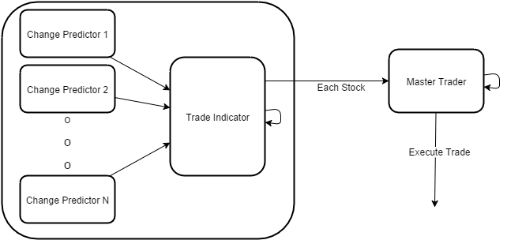

Introduction
This project is an attempt for me to evolve from being a poor college kid into a wealthy man. In all reality if this works, this page will probably be taken down. So if you read this and can't find it later, I'm probably living the good life.
I've always enjoyed playing with penny stocks, more volitile and more risky. Essentially it's just an idle game trying to make numbers in your account increase instead of decrease. I'm hoping that using machine learning techniques that I can consistently win more than I lose in the penny stock market.
Design
I've planned to build an intricate system that will hopefully make money in the stock market. The components of this system will look as follows:
- Change Predictors
- Trade Indicator
- Trader

The Trader will take the output from the Trade Indicator, and sort the data by what it thinks will have the biggest change. For example if it thinks a stock will drop 50% it will appear above a stock it thinks will increase 40%. It will then take N stocks from the top of this list, and then trade on them. Buying the stocks that will increase, and shorting the ones that will decrease. This will be another neural net, with reinforcement. This reinforcement is soley on the returns of its trades. Positive for making money, negative for losing money. In theory, this system should end up trading the stocks it's good at predicting. For example if the Trade Indicator just sucks at predicting one stock, or stocks in a sector, the Trader should eventualy just stop trading those stocks.
Obviously this system is only taking into account the market fluctuations and speculations. This does not take into account news or other outside sources. Theoretically it should be able to see these reactions and predict their outcomes reasonably quickly, hopefully reducing the amount of risk these events produce.
Results
Why Penny Stocks?
Penny stocks have some interesting behaviors. For example they are way more binary, and less organic than other stocks. This means that their values and indicators will be similar. Hopefully, making it easier to determine what a stock is going to do.
Why
I'm really just sick of being poor. I want to be rich enough to add guacamole to my burrito without contemplating how much that guac is actually worth to me.
Authors and Contributors
Nate Ashby(@Ronin11)
Derek Hunter(@DerekHunter)